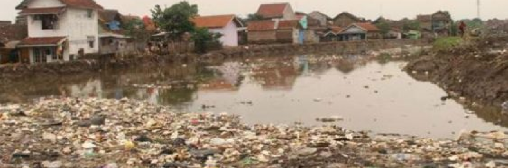

Predikat Sungai Tercemar di Dunia. Bagaimana Solusinya?
Sungai Citarum yang berlokasi di Jawa Barat dan berada di DAS Citarum telah menyandang predikat sebagai salah satu wilayah yang tercemar di dunia. Sungai sepanjang 269 kilometer ini mempunyai tiga masalah utama. Pada bagian hulu DAS, terdapat lahan kritis yang kerap kali memberikan masukan erosi tanah, selanjutnya mengalir pada sepanjang aliran dan mengendap. Sedimentasi yang menumpuk tersebut menyebabkan potensi bencana banjir ketika musim penghujan datang. Pada tahun 2013, Green Cross Swizerland dan Blacksmith Institute telah membenarkan bahwa Sungai Citarum menjadi salah satu tempat tercemar dan terkotor di dunia. Aliran air di sepanjang sungai mengalami penurunan kualitas karena banyaknya erosi serta ditambah pencemaran kotoran ternak, sampah rumah tangga dan limbah pabrik. Berbagai senyawa beracun pun ikut muncul di DAS Citarum yang tentunya berdampak buruk pada wilayah serta 35 juta orang di 13 Kabupaten/kota yang dilaluinya. Penelitian yang dilakukan oleh Greenpeace Asia Tenggara dan Wahana Lingkungan Hidup Indonesia (WALHI) Jawa Barat telah menemukan hasil bahwa logam berat yang berasal dari limbah pabrik telah menjadi kontaminan utama Sungai Citarum.
Pesatnya pertumbuhan penduduk dan pembangunan yang terus berjalan mengakibatkan DAS Citarum makin terdegradasi. Beberapa aktivitas seperti pembukaan lahan hutan untuk pembangunan perumahan dan pengusahaan lahan pertanian, perilaku membuang sampah ke sungai yang tidak terkontrol juga menjadi satu indikasi sebab kerusakan. Telah diakui bahwa masyarakat sepanjang aliran sungai memiliki budaya membuang sampah yang tidak dilakukan pengolahan terlebih dahulu. Masih minimnya pemahaman akan lingkungan dan sikap apatis masyarakat terhadap kondisi sungai dan sampah semakin memperburuk kondisi Sungai Citarum. Telah terdapat beberapa implementasi program yang sangat baik dan berbobot dari Pemprov Jawa Barat seperti “Citarum Bergetar (2000-2003)” dengan fokus program yakni pengendalian pencemaran, selanjutnya “Citarum Bestari (2013)” dengan dokus program yakni pengentasan masalah pencemaran air serta mewujudkan air Sungai Citarum Layak Minum dalam lima tahun. Pada kenyataannya, kedua program tersebut gagal dipenuhi dan tidak dapat diimplementasikan dengan sempurna. Selanjutnya, terdapat satu program terbaru yang baru rilis pada tahun 2018 dan didorong langsung oleh Presiden Joko Widodo yakni “Citarum Harum”. Pada intinya keseluruhan program tersebut dilakukan dengan tujuan memulihkan dan mengembalikan ekosistem DAS Citarum agar kondisinya dapat menjadi baik, namun sering kali program yang digencarkan mengalami kendala dalam pelaksanaan.
Persoalan tentang mengembalikan kondisi Sungai Citarum agar dapat kembali sebagaimana kondisi awal tidak semudah membalikan telapak tangan. Beberapa titik DAS Citarum yang melewati 13 Kabupaten/Kota masih dikelola oleh segelintir pihak seperti Perhutani dan Perkebunan Nusantara VII. Sungai Citarum memang melintasi belasan kabupaten/kota sehingga urusan-urusan sampah kerap kali menjadi bola ping pong. Seringkali program yang digencarkan juga mengalami kendala seperti kendala koordinasi, belum sepenuhnya semua stakeholder dilibatkan dalam merumuskan solusi, serta belum semua mengerti akan makna tanggung jawab bersama dalam mengelola Sungai Citarum.